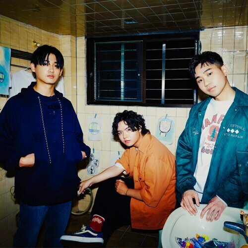
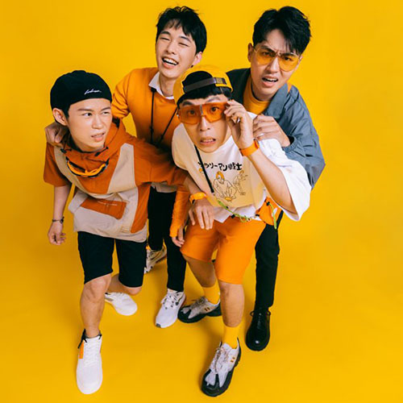
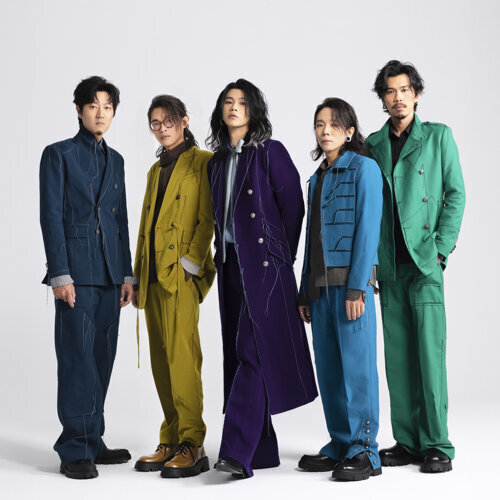
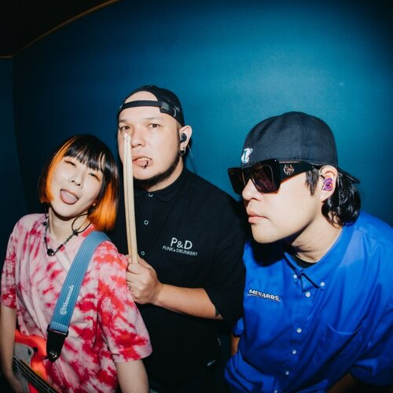

溫室雜草
2019 年自台中發跡的三件式樂團，2021 年初發行《春天有腳》EP 通過三首追尋衝浪感、體現幽默與浪漫的鬆弛創作，搭配反差十足的躁動演出現場，以扎實、酥麻的破音聲響震耳彈奏，帶給聽眾最新鮮的聽覺刺激。
康士坦的變化球
曲風融合後搖滾、情緒搖滾、硬核搖滾及全員主唱的元素，複雜鼓點加上吉他、貝斯音牆，VJ與合成器的編制，也以影像與音樂結合。歌曲擅長刻畫現實生活，引起廣大共鳴，被歌迷喻為「厭世樂團」代表之一。

芒果醬
音樂風格以流行龐克為主，佐以民謠搖滾，毫無保留的直白吉他 Riff、搭配主唱把人生梭哈般的高能演唱，負責低音組的鼓與貝斯，則擔任歌曲中的節奏擔當，擅長創造燃點極低、易燃易爆炸的爽快節奏，亦能在抒情曲中緩下能量，因應曲目風格與故事帶動氛圍。

麋先生
麋先生淋漓暢快的曲風，搭配著如詩迷幻意識張顯的詞曲風格，加上主唱獨特的嗓音和爆發力十足的舞台魅力，迅速引起各界矚目，以專輯《馬戲團運動》首度入圍第25屆金曲獎，並獲得最佳樂團獎。

怕胖團
怕胖團的歌曲從來不是要賦予聽者任何大道理，而是透過真實呈現與紀錄，讓一切生命中的體驗有存在的意義，談論念書的煩躁、同學間的胡鬧、對於友情的重視又或是迎接未來的問號，總是完整地把生活中的自己保存在音樂中。
溫蒂漫步
2020年溫蒂漫步以一首〈我想和你一起〉孤峰突起，「我想和你一起，趕走天上的烏雲，從那沙灘上驚醒……」輕輕柔柔的呢喃，在疫情亂世中帶來了一抹溫暖與浪漫。這首從編曲至歌詞都浪漫到無可救藥的「神曲」。